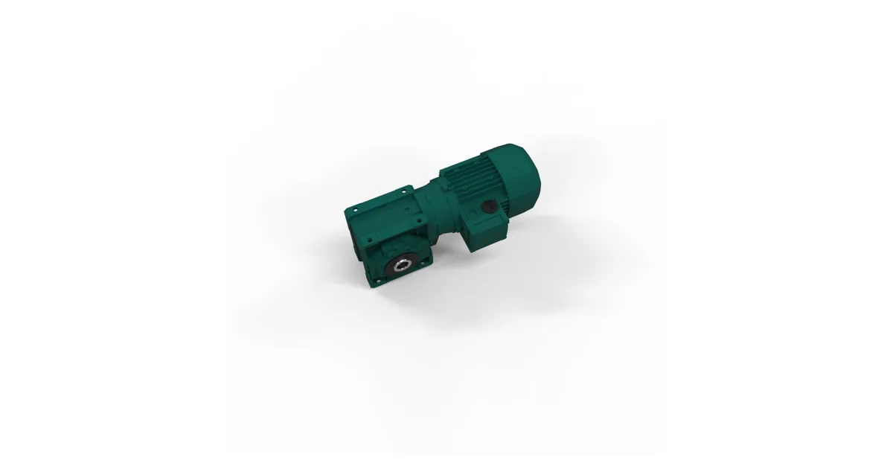

Собственное производствоПромышленные редукторы для производителей оборудования•Отгрузка по всей России•Аналоги SEW, NORD, Bonfiglioli без переделки рамы•Расчёт и КП за 15 минут•Гарантия 36 месяцевПромышленные редукторы для производителей оборудования•Отгрузка по всей России•Аналоги SEW, NORD, Bonfiglioli без переделки рамы•Расчёт и КП за 15 минут•Гарантия 36 месяцев
Guomao серия GK — коническо-цилиндрические мотор-редукторы: расшифровка и замена
Guomao серия GK — коническо-цилиндрические мотор-редукторы китайского производителя Guomao Reducer Group. В серию входят типоразмеры GK37–GK157, мощность приводов — 0,12–200 кВт, крутящий момент — до 18 000 Н·м. Ниже — как читается обозначение, что смотреть на шильде и как подобрать замену на редуктор ZR собственного производства.

Типовое исполнение коническо-цилиндрического привода
Что это за серия
Guomao Reducer Group — китайский производитель приводной техники (биржевой код 603915), выпускающий мотор-редукторы модульной G-серии. Индекс GK в этой линейке закреплён за коническо-цилиндрическим исполнением: крутящий момент передаётся через две цилиндрические ступени и одну коническую пару, поэтому выходной вал развёрнут относительно входного на 90°.
Такая компоновка нужна там, где привод должен «завернуть» поток мощности: приводы конвейеров и элеваторов, мешалки, скребковые транспортёры, приводы затворов и шиберов. По сравнению с червячной передачей коническая пара имеет заметно более высокий КПД, поэтому серия GK применяется на длительных режимах работы, где потери на трении критичны.
Внутри серии типоразмер растёт от GK37 к GK157 — вместе с межосевыми расстояниями, диаметрами валов и допустимым моментом. Верхняя граница по каталогу производителя — 18 000 Н·м, диапазон мощности приводного двигателя — от 0,12 до 200 кВт.
Как читается обозначение GK
Обозначение строится из буквенного индекса серии и числа типоразмера: GK — коническо-цилиндрический редуктор, число (37, 47, 57 … 157) — габарит. Чем больше число, тем крупнее корпус и выше допустимый момент. К базовому индексу производитель добавляет исполнение вала и фланца, монтажное положение, передаточное число и данные встроенного двигателя — их приводят на шильде и в опросном листе.
Мы сознательно не публикуем таблицу «модель Guomao → типоразмер ZR»: у Guomao и у нашего производства разные ряды габаритов, и подобное соответствие «на бумаге» приводит к тому, что редуктор не встаёт на существующую раму. Замену мы подбираем по фактическим данным: шильду, габаритному чертежу и условиям работы механизма.
Характеристики серии Guomao GK по данным производителя
Параметр
Значение
Тип передачи
коническо-цилиндрическая: две цилиндрические ступени + коническая пара
Типоразмеры
GK37 – GK157
Мощность
0,12–200 кВт
Крутящий момент
до 18 000 Н·м
Взаимное положение валов
валы под углом 90°
Исполнения
на лапах, фланцевое, с полым валом — уточняется по шильду и чертежу
Данные приведены по открытому каталогу производителя. Значения для конкретного изделия читаются с шильда: типоразмер, передаточное число, мощность и монтажное положение указаны там же. Готовых таблиц «модель Guomao → типоразмер ZR» мы не публикуем — соответствие по габаритным и присоединительным размерам подтверждает инженер по фото шильда или чертежу.
Замена на редуктор ZR: как подбираем
Подбор идёт от факта, а не от таблицы. Нужны фото шильда (или габаритный чертёж), требуемый крутящий момент на выходном валу, передаточное число, монтажное положение, исполнение и диаметр вала, режим работы. По этим данным инженер выдаёт исполнение ZR с габаритными и присоединительными размерами под существующую раму; если посадочные места расходятся, в комплект закладывается переходная плита.
Seriya Guomao Gk — технический параметр, учитываемый при подборе, замене и эксплуатации промышленных редукторов и мотор-редукторов. Правильное понимание помогает избежать ошибок при заказе аналога и продлить срок службы привода.
Что такое Guomao серия GK?
Guomao GK — линейка коническо-цилиндрических мотор-редукторов Guomao Reducer Group. В серию входят типоразмеры GK37–GK157, мощность 0,12–200 кВт, крутящий момент до 18 000 Н·м. Компоновка — две цилиндрические ступени плюс коническая пара, валы расположены под углом 90°.
Как расшифровать обозначение Guomao GK?
GK — индекс коническо-цилиндрической серии, число после букв (37, 47, 57 … 157) — типоразмер: чем больше число, тем крупнее корпус и выше допустимый момент. Передаточное число, монтажное положение, исполнение вала и параметры двигателя указывают отдельно — на шильде и в опросном листе.
Чем заменить редуктор Guomao GK?
Подбираем редуктор ZR собственного производства по фактическим данным: пришлите фото шильда или габаритный чертёж, укажите момент, передаточное число и монтажное положение. Готовых таблиц соответствия «Guomao GK — типоразмер ZR» мы не публикуем: ряды габаритов у производителей разные, подбор делает инженер. Быстрый расчёт — в калькуляторе /podbor.
Какие типоразмеры входят в серию GK?
По каталогу производителя серия охватывает типоразмеры от GK37 до GK157. Конкретное исполнение вашего редуктора — с передаточным числом, вариантом вала и монтажным положением — читается на шильде.
Как оформить заказ?
Заявка через сайт, письмо на zr@zavod-red.ru или звонок менеджеру. Для юрлиц — счёт по реквизитам, для частных лиц — оплата картой.
Какая доставка по России?
Любой транспортной компанией до терминала или двери; отгрузка со склада в Челябинске за 1–3 дня, упаковка — обрешётка.
Как подобрать редуктор под задачу?
Нужны: мощность двигателя, обороты на входе и выходе, крутящий момент, режим работы. Инженер рассчитывает типоразмер и передаточное число.
Какая гарантия на редуктор?
36 месяцев с даты отгрузки. Паспорт изделия, декларация ЕАС, сертификат ГОСТ. При заводском дефекте — замена по договору.
Guomao серия GK — коническо-цилиндрические мотор-редукторы с типоразмерами GK37–GK157, мощностью 0,12–200 кВт и моментом до 18 000 Н·м. Guomao — добросовестный производитель со своим каталогом и сервисной сетью; вопрос замены на российский привод обычно возникает не из-за характеристик, а из-за логистики: срок поставки позиции из Китая под конкретное передаточное число измеряется неделями, а при аварийной остановке линии счёт идёт на дни.
Здесь у собственного производства есть два честных преимущества. Первое — срок: типовые коническо-цилиндрические редукторы ZR отгружаются со склада в Челябинске, нетиповые исполнения изготавливаются в производственном цикле, а не ждут морского контейнера. Второе — ремонтопригодность на месте: колёсные пары, валы, крышки и уплотнения изготавливаются по нашим же чертежам, поэтому восстановление редуктора не упирается в доступность запчастей у зарубежного поставщика.
Порядок работы простой: вы присылаете фото шильда или габаритный чертёж, мы уточняем передаточное число, номинальный момент и монтажное положение, после чего инженер выдаёт исполнение ZR с габаритными и присоединительными размерами под существующую раму. Если посадочные размеры отличаются, в комплект закладывается переходная плита — это дешевле переделки механизма.
Рекомендуете наши редукторы коллегам, заказчику или своему отделу снабжения? За каждый состоявшийся заказ по вашей рекомендации выплачиваем 5% от суммы — реферальное вознаграждение переводом на карту. Прозрачный договор, работа со снабженцами и проектными отделами напрямую, отгрузка от производителя (ООО «НИИ АТТ», Челябинск).